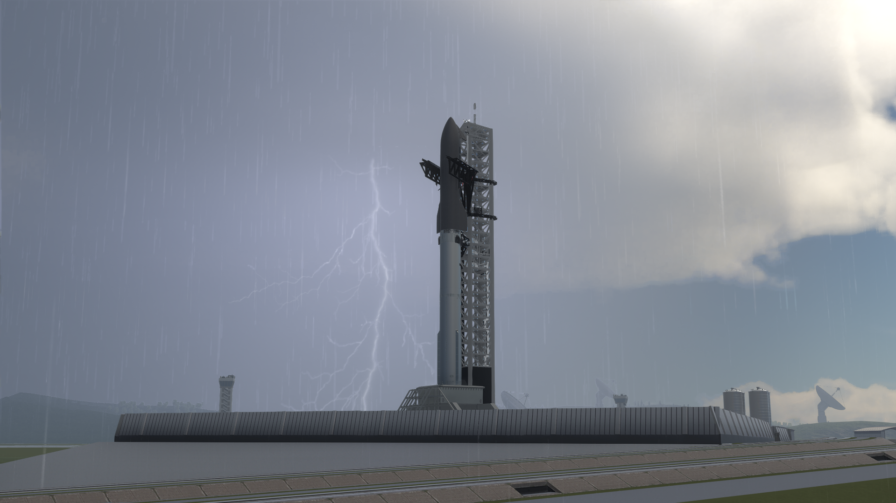
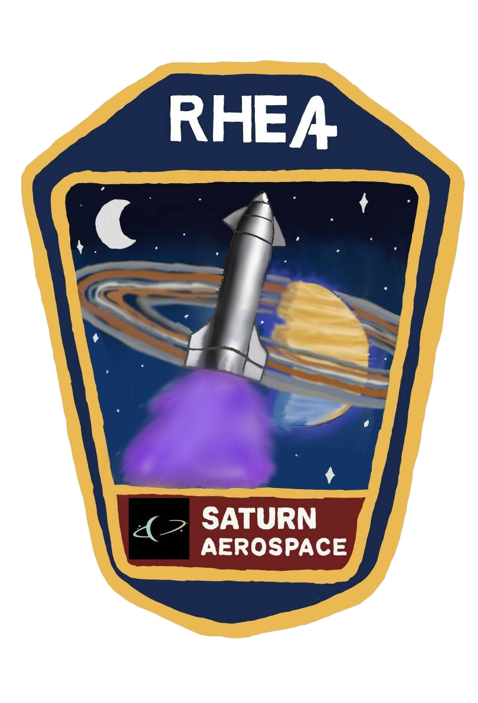
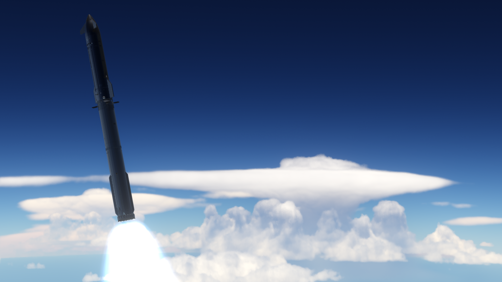
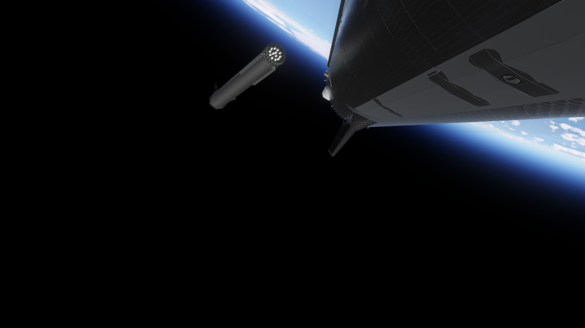
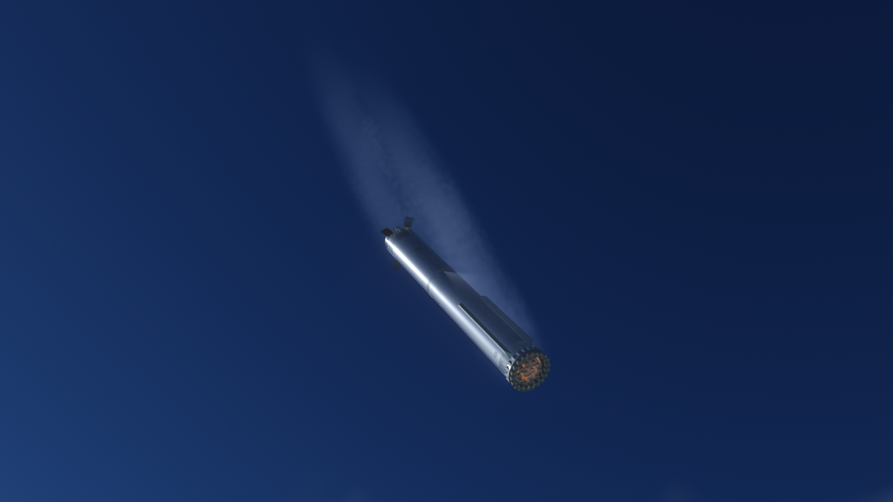
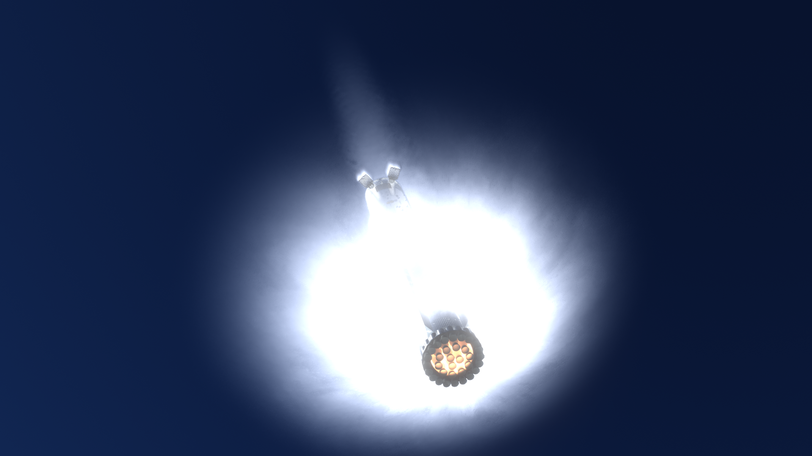
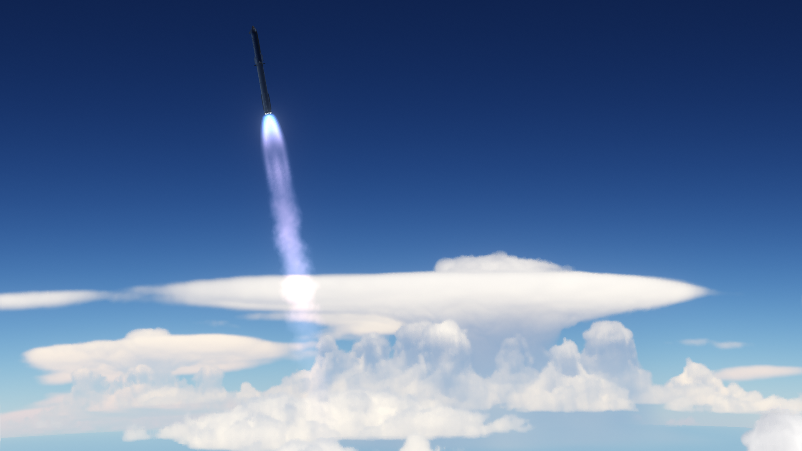

Class
Super heavy, fully reusable launch system built for Saturn Aerospace's most demanding missions.

Vehicle
Saturn Aerospace's most powerful vehicle, built as a fully reusable super heavy launcher for the fleet's biggest missions.
Vehicle Identity
Rhea is Saturn Aerospace's most powerful launch vehicle. Weighing over 1200 tonnes, it is designed for missions that demand more lift, more scale, and more capability than any other vehicle in the current Saturn lineup.
Over the years the vehicle has gone through major design changes, with the current focus on Block 4, known as RHE4. This latest version is intended to be the most advanced and most capable Rhea yet while keeping the reusable identity that defines the vehicle.

Class
Super heavy, fully reusable launch system built for Saturn Aerospace's most demanding missions.
Current Design
Block 4, or RHE4, is the latest and most advanced Rhea configuration now in development.
Lift Performance
More than 100 tonnes to Low Earth Orbit while retaining a fully reusable mission profile.
Booster
The first stage uses 33 Anthe engines and produces over 1600 tonnes of thrust at liftoff.

Ascent
At liftoff the first stage ignites all 33 Anthe engines and sends Rhea away from the pad with the force expected from Saturn Aerospace's flagship heavy launcher. The ascent profile is direct, bright, and dramatic, exactly the way a vehicle like this should feel.
These launch and climb shots help sell the idea that Rhea exists for payloads that are simply too large for the rest of Saturn's fleet, giving the vehicle a clear role instead of making it just another rocket page.
Recovery
After staging, the first stage returns toward the launch site instead of being thrown away. That return is central to Rhea's identity. The booster is built to come back through reentry, line up with the launch tower, and be caught by the chopsticks at the site.
Reuse is what turns Rhea from a powerful rocket into a launch system. It is designed to fly again, carry the next mission, and make heavy lift feel repeatable rather than expendable.


Reuse
The recovery sequence is part of what makes Rhea feel so close in spirit to Starship. It is not only about raw performance. It is about a heavy vehicle surviving ascent, returning under control, and being prepared for another mission instead of being discarded.
That approach gives Rhea a major role inside Saturn Aerospace operations: it handles the fleet's heaviest work while supporting a future built around rapid reuse.
Gallery


Mission Patch
The Rhea mission patch gives the vehicle a strong emblem of its own and helps it feel rooted inside the wider Saturn Aerospace fleet rather than existing as a one-off concept page.
Patch artwork by April.